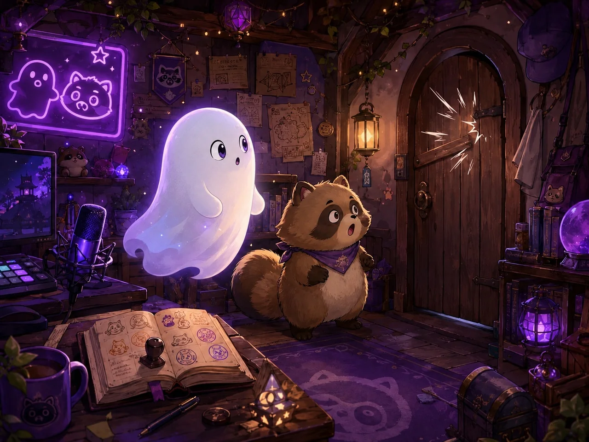
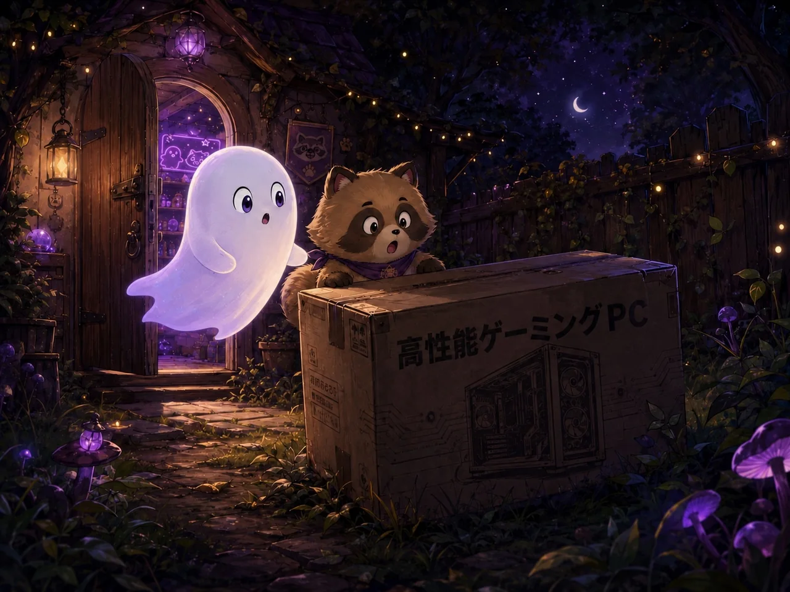
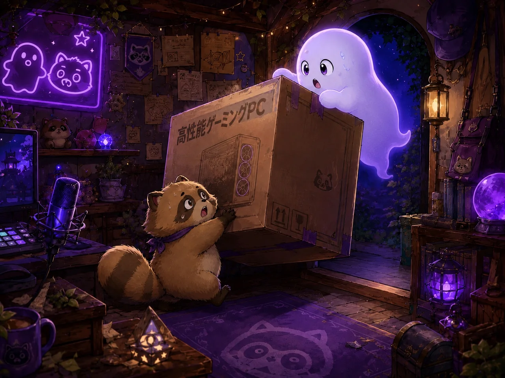
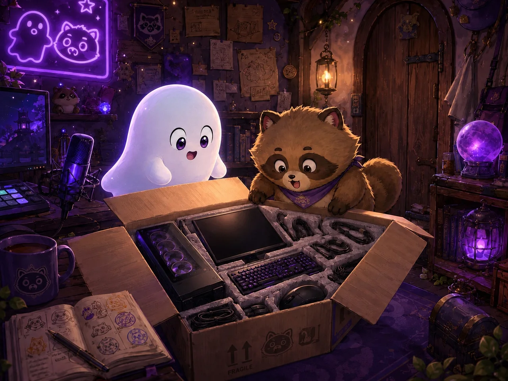
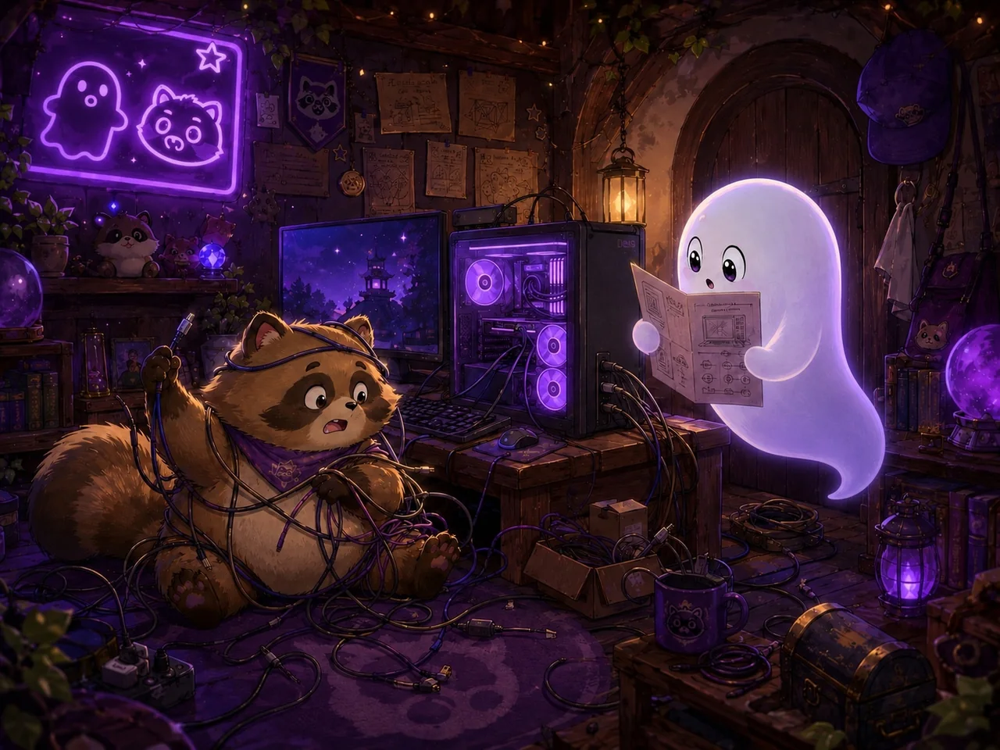
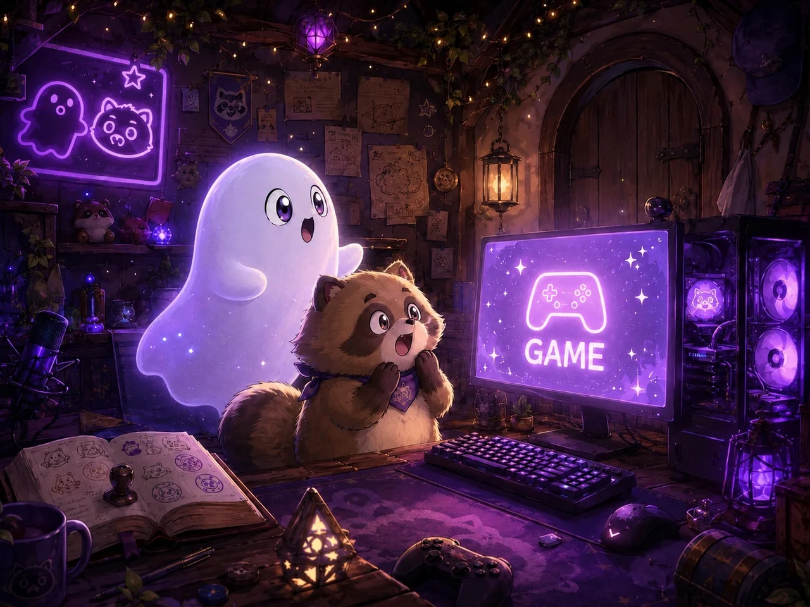
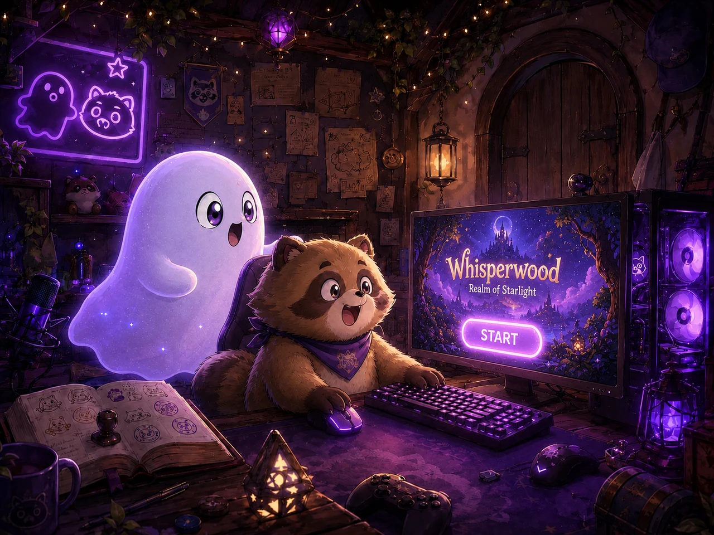
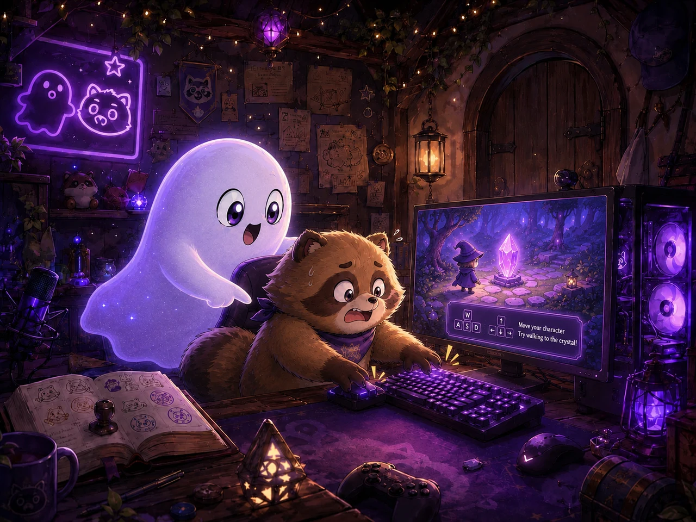
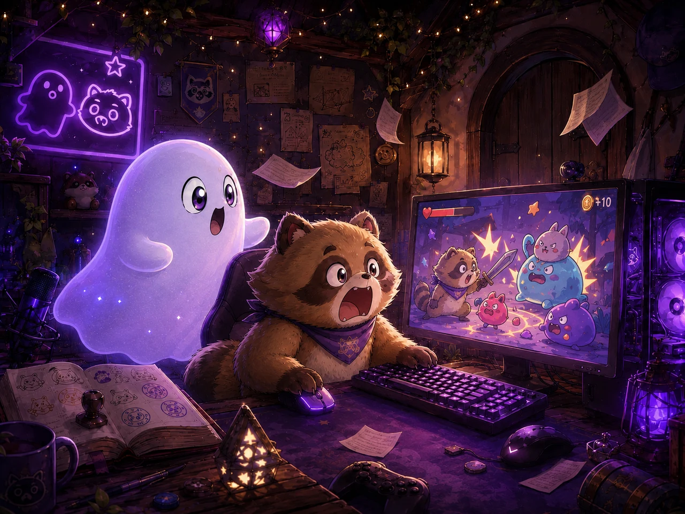
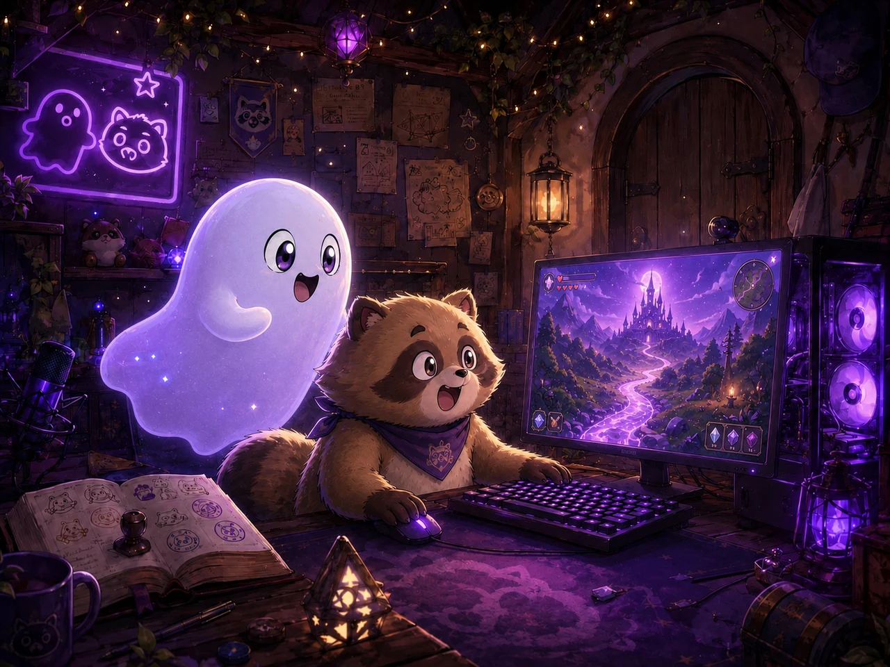

小説置き場
秘密基地の物語一覧
ここは、秘密基地にまつわる小説をまとめていく場所です。今後追加する小説も、このページから読めるようにしていきます。
作品名を押すと話数一覧が開き、話数を押すと本文が開きます。
人間世界から落ちてきた高性能ゲーミングPCをきっかけに、幽霊とたぬちゃんがゲームと配信に出会っていく物語です。
第1話 本編
紫色のネオンが、夜の秘密基地をぼんやり照らしていた。
そこは、人間世界から少しだけ外れた場所にある、不思議な小さな隠れ家だった。
古い木の扉。
月明かりに光る看板。
壁に貼られた、誰かの落書きみたいな迷言。
そして、奥の部屋には、毎日こっそり押される来場スタンプの台帳が置いてある。
その秘密基地には、幽霊とたぬちゃんが住んでいた。
幽霊は、ふわふわと浮かびながら、今日も部屋の灯りを整えていた。
怖い幽霊ではない。
少し不思議で、少し静かで、でも誰かが迷い込んできたら、ちゃんと「いらっしゃい」と言ってくれる幽霊だった。
「今日も静かだね」
幽霊がそうつぶやくと、床の上で丸くなっていたたぬちゃんが、ぴくっと耳を動かした。
「静かなのも悪くないぽん。でも、ちょっと退屈だぽん」
たぬちゃんは、のんびり屋だけど好奇心だけは人一倍強い。
面白そうなものを見つけると、すぐに近づいてしまう。
幽霊は小さく笑った。
「退屈って言ってる時ほど、たぬちゃんは何か見つけてくるよね」
「それは才能だぽん」
たぬちゃんが胸を張った、その時だった。
――ドスン。
秘密基地の外で、大きな音がした。
二人は同時に振り向いた。

「……今の、聞こえた？」
「聞こえたぽん。すごく聞こえたぽん」
幽霊は少しだけ眉をひそめた。
秘密基地の周りは、ふつう何も落ちてこない。
風が吹くことはある。
迷い込んだ紙切れが飛んでくることもある。
でも、今の音はそんな軽いものではなかった。
たぬちゃんは、もう扉の前まで走っていた。
「見に行くぽん！」
「待って。危ないものかもしれないよ」
「でも、見ないと分からないぽん」
たぬちゃんは扉を開けた。
外には、夜の森が広がっていた。
木々の間から、紫色の光が細く漏れている。
その光の先、秘密基地の裏庭に、見慣れない大きな箱が落ちていた。
箱には、人間世界の文字でこう書かれていた。
高性能ゲーミングPC

たぬちゃんは首をかしげた。
「げーみんぐ……ぴーしー？」
幽霊は箱の周りをふわりと回った。
「人間世界の機械みたいだね」
「食べ物ではないぽん？」
「たぶん違うね」
たぬちゃんは少し残念そうな顔をしたが、すぐに目を輝かせた。
「じゃあ、遊び道具だぽん！」
「決めるの早いなあ」
二人は箱を秘密基地の中へ運ぶことにした。

とはいえ、箱はかなり重かった。
たぬちゃんが押して、幽霊が浮かせようとして、何度も向きがずれて、扉にぶつかりそうになった。
「右、右だよ」
「右ってどっちぽん？」
「たぬちゃんのしっぽがある方じゃないよ」
「じゃあ反対ぽん！」
そんなやり取りをしながら、なんとか箱は秘密基地の真ん中に置かれた。
箱を開けると、中には黒く光る大きな機械と、画面、キーボード、マウス、たくさんのコードが入っていた。

たぬちゃんはキーボードを見つめた。
「ボタンがいっぱいだぽん」
幽霊は説明書らしき紙を手に取った。
「これをつなげば、動くみたい」
「幽霊、こういうの分かるぽん？」
「分からないけど、説明書は読めるよ」
「じゃあ勝ったぽん」
「何に？」
二人は説明書を見ながら、少しずつコードをつないでいった。
画面。
電源。
キーボード。
マウス。
よく分からない線。
もっとよく分からない線。

途中でたぬちゃんがコードに絡まり、幽霊がほどいた。
途中で幽霊が電源ボタンを見失い、たぬちゃんが鼻で見つけた。
そして、最後に電源ボタンを押すと――
ブゥン。
静かだった秘密基地に、低い機械音が響いた。
画面が光った。
紫色のネオンとは違う、まぶしい人間世界の光だった。
たぬちゃんは飛び上がった。
「ついたぽん！ 生きてるぽん！」
「生き物ではないと思うけど……すごいね」
画面には、いくつものアイコンが並んでいた。
その中に、ひときわ目立つものがあった。
GAME

たぬちゃんはそれを見逃さなかった。
「これ、押していいぽん？」
幽霊は少し考えた。
この箱がどこから来たのか。
誰のものなのか。
なぜ秘密基地に落ちてきたのか。
分からないことはたくさんあった。
でも、たぬちゃんの目はきらきらしていた。
そして幽霊自身も、ほんの少しだけ気になっていた。
人間世界のゲーム。
人間たちが夢中になる遊び。
それはいったい、どんなものなのだろう。
幽霊は小さく息をついた。
「少しだけだよ」
「やったぽん！」
たぬちゃんがマウスを押した。
画面が切り替わる。
音楽が流れる。
知らない世界が画面の向こうに広がっていく。
森でもない。
秘密基地でもない。
人間世界でもない。
画面の中には、二人がまだ見たことのない冒険が待っていた。
幽霊は画面を見つめたまま、ぽつりと言った。
「……なんだか、不思議だね」
たぬちゃんは隣で、しっぽをぶんぶん振っていた。
「これは絶対、面白いやつだぽん」
その夜、秘密基地に新しい音が加わった。
キーボードを押す音。
マウスを動かす音。
たぬちゃんの楽しそうな声。
そして、幽霊の小さな笑い声。
二人はまだ知らなかった。
この高性能パソコンが、秘密基地を少しずつ変えていくことを。
ただの遊びだったゲームが、やがて誰かとつながる場所になることを。
そしていつか、この秘密基地にたくさんの来場者がふらっとのぞきに来るようになることを。
その始まりは、ひょんなことから落ちてきた一つの箱だった。
2026/06/10 解放
第2話「はじめてのゲーム」は、2026/06/10に解放されます。
第2話 本編
高性能パソコンの画面に、紫色の光が広がっていた。
秘密基地の中は、いつもより少しだけ明るかった。
棚に置かれた小さなランタン。
壁に光る幽霊とたぬちゃんのネオンサイン。
机の上に開かれた来場スタンプの台帳。
そして、その真ん中で、できたばかりのゲーミングPCが静かに光っている。
たぬちゃんは、画面の前で両手をぎゅっと握っていた。
「すごいぽん……。なんか、もう始まりそうだぽん」
幽霊は、ふわふわと隣に浮かびながら画面を見つめた。
「まだ何も押してないけどね」
画面には、大きな文字が出ていた。
GAME
その下には、小さくこう書かれている。
START

たぬちゃんは、マウスを見た。
それからキーボードを見た。
それから、なぜか自分のしっぽを見た。
「どれを押せばいいぽん？」
「たぶん、マウスで押すんだと思う」
「この黒い小さいやつぽん？」
「うん。そっとね」
たぬちゃんは、マウスに前足を乗せた。
カチッ。
その瞬間、画面がぱっと切り替わった。
紫の星空。
浮かぶ島。
遠くに見えるお城。
きらきら光る小道。
画面の中に、秘密基地とはまったく違う世界が広がっていた。
たぬちゃんは目を丸くした。
「入ったぽん！」
「画面の中にね」
「すごいぽん！ ここ行けるぽん？」
幽霊は少し笑った。
「ゲームだから、動かせば行けるんじゃないかな」
画面の中央には、小さなキャラクターが立っていた。
丸い帽子をかぶった冒険者で、手には小さな剣を持っている。
その上に、説明が表示された。
W A S D で移動
たぬちゃんは、キーボードをじっと見た。
「わ、あ、す、で……？」
「たぶん、この文字のキーを押すんだよ」
「よし、任せるぽん」
たぬちゃんは自信満々に、キーボードへ前足を置いた。
そして、全部まとめて押した。

キャラクターは突然ぐるぐる回りながら、木にぶつかった。
「止まらないぽん！」
「押しすぎだよ。ひとつずつ、ひとつずつ」
「ひとつずつが難しいぽん！」
キャラクターは木の根元で、右へ左へ小刻みに動いている。
たぬちゃんは真剣だった。
真剣すぎて、口が少し開いていた。
幽霊は画面の横で、説明書を読みながら言った。
「まずは前に進む。Wだけ押して」
「だぶりゅー……これぽん！」
たぬちゃんがWキーを押す。
キャラクターが一歩、前へ進んだ。
「動いたぽん！」
「うん。今のは上手だった」
「もう一回ぽん！」
キャラクターはまた一歩進んだ。
その先に、小さな光る石があった。
E で調べる
幽霊が指さした。
「あれ、調べられるみたい」
「調べるって、食べられるってことぽん？」
「違うと思う」
たぬちゃんはEキーを押した。
画面の中で光る石がふわっと浮かび、冒険者の周りに小さな星が舞った。
はじまりの結晶を手に入れた
たぬちゃんは息をのんだ。
「もらえたぽん……！」
幽霊も少しだけ目を輝かせた。
「きれいだね」
「これ集めるやつだぽん。たぶん全部集めるやつだぽん」
「まだ一個目だけど、もう全部集める気なんだ」
「もちろんぽん」
その後、二人は少しずつ操作を覚えていった。
前に進む。
後ろに下がる。
横に歩く。
視点を動かす。
ジャンプする。
ただ、ジャンプだけは少し大変だった。
「スペースキーだって」
「すぺーす……どれぽん？」
「これ。一番長いやつ」
たぬちゃんがスペースキーを押す。
冒険者がぴょんと飛んだ。
「飛んだぽん！」
もう一度押す。
また飛ぶ。
さらに押す。
何度も飛ぶ。
冒険者は、何もない場所でずっとぴょんぴょん跳ね続けた。
「楽しいぽん！」
「進んでないよ」
「でも楽しいぽん！」
幽霊は小さく笑った。
秘密基地には、今まで聞いたことのない音が響いていた。
キーボードを押す音。
マウスを動かす音。
ゲームの中から流れる音楽。
たぬちゃんの楽しそうな声。
それは、ただの機械の音ではなかった。
二人だけの秘密基地に、新しい遊びが生まれた音だった。
しばらく進むと、画面の中に小さな敵が現れた。
丸くて、とげとげしていて、ぷかぷか浮いている。
たぬちゃんの耳がぴんと立った。
「なんか来たぽん」
「敵かな」
「敵ぽん！？ どうするぽん！？」
画面には新しい説明が出た。
左クリックで攻撃
幽霊が読んだ。
「マウスを押すみたい」
「これぽんね！」
たぬちゃんは勢いよくクリックした。
冒険者が剣を振る。
しかし、敵には届かなかった。

「当たらないぽん！」
「近づいてからだね」
「近づくの怖いぽん！」
「ゲームだから大丈夫だよ」
「ゲームでも怖いものは怖いぽん！」
それでも、たぬちゃんは少しずつ近づいた。
敵がふわふわ動く。
冒険者が剣を振る。
一回目は空振り。
二回目も空振り。
三回目で、やっと当たった。
ポン、と明るい音がして、敵が小さな星になって消えた。
たぬちゃんは固まった。
それから、ゆっくり幽霊を見た。
「……勝ったぽん？」
「勝ったね」
「勝ったぽん！」
たぬちゃんはその場でぴょんぴょん跳ねた。
画面の中の冒険者も、なぜか一緒にぴょんぴょん跳ねていた。
幽霊は笑いながら、たぬちゃんの隣に浮かんだ。
「最初の敵に勝っただけで、そんなに喜ぶんだ」
「最初だから大事なんだぽん！」
「それは、たしかにそうかも」
ゲームの中では、道の先に小さなお城が見えていた。
紫の空に星が浮かび、光る結晶が道を照らしている。

たぬちゃんは、もうすっかり画面に夢中だった。
「次はあのお城に行くぽん」
「今日は少しだけって言ったけど」
「少しだけ行くぽん。お城の前までぽん」
「それ、着いたら中も見たくなるやつだよね」
「ちょっとだけ中を見るぽん」
幽霊は困ったように笑った。
でも、その目はたぬちゃんと同じくらい、画面の世界に引き込まれていた。
秘密基地の外では、夜の森が静かに揺れている。
でも、部屋の中だけは、まるで小さな冒険の入口みたいだった。
「ねえ、たぬちゃん」
幽霊が言った。
「なにぽん？」
「ゲームって、思ってたより不思議だね」
たぬちゃんは画面を見たまま、うなずいた。
「うん。不思議で、忙しくて、ちょっと怖くて……でも、すごく楽しいぽん」
「そうだね」
幽霊は、画面の中の星空を見つめた。
この世界には、まだ知らない道がある。
まだ見たことのない場所がある。
まだ出会っていない何かがある。
そして、その隣には、わくわくしすぎて前のめりになっている友達がいる。
それだけで、なんだか少し楽しかった。
「じゃあ、お城の前までね」
幽霊がそう言うと、たぬちゃんはぱっと顔を輝かせた。
「やったぽん！」
たぬちゃんはWキーを押した。
冒険者が前に進む。
紫の光る道を、ゆっくり歩いていく。
その先に何があるのか、二人はまだ知らない。
けれど、この夜、幽霊とたぬちゃんは知ってしまった。
ゲームの世界には、終わりの時間を忘れさせる力があることを。
そして、秘密基地の夜は、これまでより少しだけ長く、少しだけにぎやかになった。